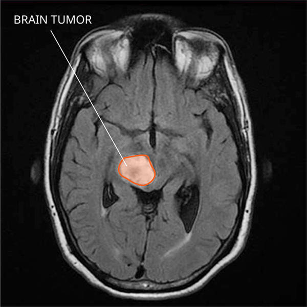
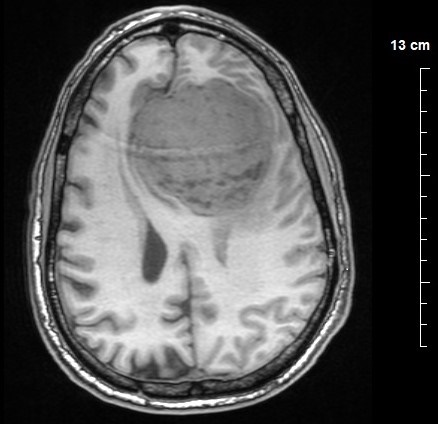
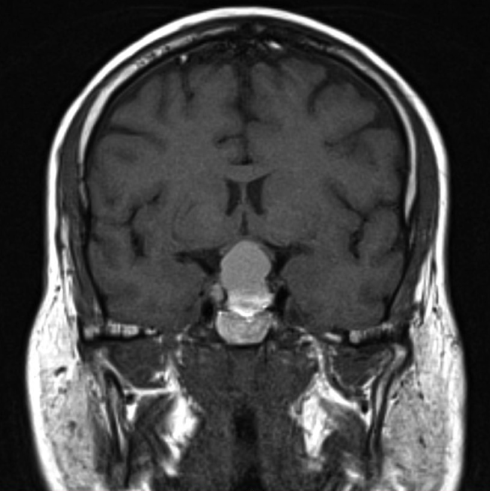

<div class="container" id="blog">
  <div class="blog">
    <h2>Know More</h2>
    <p> Get to know more about Brain Tumor for right treatment </p>
    <ul class="cards">
      <li class="card">
        
        <h3>Gliomas </h3>
        <div class="content">
          <p>Gliomas, one of the most common subset of primary tumors of the brain and central nervous system, form from
            the glial cells that surround neurons. </p>
        </div>
      </li>
      <li class="card">
        
        <h3>Meningiomas </h3>
        <div class="content">
          <p>Meningioma develop in the cells of the membrane that surround the brain and spinal cord. Meningiomas (also
            called meningeal tumors) account for approximately 15 percent of all intracranial tumors. Most of these
            tumors are benign (non-cancerous and slow-growing). </p>
        </div>
      </li>
      <li class="card">
        
        <h3>Pituitary tumors </h3>
        <div class="content">
          <p>Pituitary tumors are lumps that form in the pituitary, a small gland about the size of a pea that sits
            inside the skull, just below the brain and above the nasal passages. The pituitary gland produces hormones
            that control the levels of other hormones secreted by endocrine glands throughout the body, giving it an
            important role in controlling key body functions and the hormonal system. </p>
        </div>
      </li>
    </ul>
  </div>
</div>
